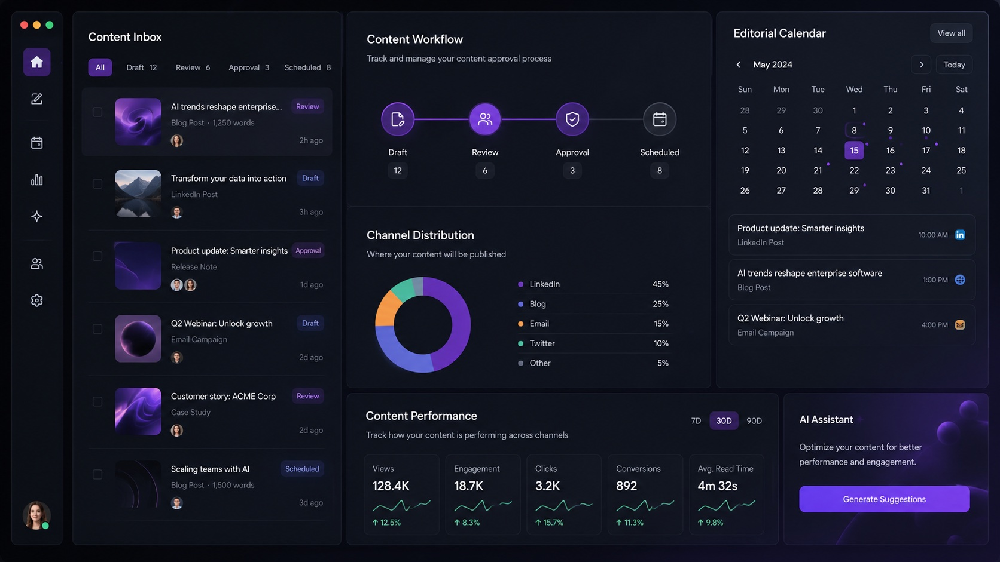

Sve stiže u chat
Fotke, imena, izjave i linkovi završe u porukama koje brzo potonu.
WhatsApp ulaz + urednički pregled
Od eventa do objave bez kaosa.
Svatko iz tima pošalje event, fotke i kratke informacije u WhatsApp. LacoIQ od toga pripremi prijedloge objava koje se mogu urediti, odobriti i objaviti.

Zašto sada
Ljudi s terena već šalju fotografije, poruke i kratke informacije u WhatsApp. Problem je što se iz toga teško brzo složi dobra objava.
Fotke, imena, izjave i linkovi završe u porukama koje brzo potonu.
Urednik ručno traži kontekst, piše tekst i pita tko smije odobriti.
LinkedIn, Facebook, Instagram, blog i newsletter ne trebaju isti tekst.
Teško je vidjeti što je stiglo, što se uređuje, što čeka i što je objavljeno.
Jednostavniji put
LacoIQ počinje tamo gdje ljudi već rade: u WhatsAppu. Od jedne poruke nastaje pregledan zadatak, prijedlog teksta i jasna odluka tko ga uređuje i objavljuje.
Netko naknadno traži fotke, kontekst, tekst i potvrdu.
Sustav pripremi prijedloge, urednik ih doradi, admin prati status.
Kako radi
Teren pošalje materijale na poznato mjesto. LacoIQ ih pretvori u uredan pregled, prijedloge tekstova i zadatke koje tim može dovršiti bez prepisivanja iz chata.
Svatko pošalje fotke, osnovne informacije i napomene u dogovoreni WhatsApp kanal.
Materijali se slože po eventu kako urednik ne bi tražio stvari po chatu.
LacoIQ pripremi prve verzije za LinkedIn, Facebook, Instagram, blog i newsletter.
Urednik mijenja tekst, krati ga, prilagodi ton i potvrđuje finalnu verziju.
Odaberi kanale i termin objave dok je događaj još aktualan.
Admini vide što je stiglo, tko uređuje, što čeka odobrenje i što je objavljeno.
Dnevni rad
Fotke, kratki opis, ime osobe, lokacija ili glasovna poruka stignu kroz WhatsApp.
Tekst se može prepraviti, skratiti, promijeniti po tonu i tek onda poslati na odobrenje.
Pregled pokazuje nove prijave, tekstove u izradi, objave na čekanju i završene objave.
Pregled i odobrenja
WhatsApp je ulaz za cijeli tim, ali objava ostaje pod kontrolom urednika i administratora.
Član tima pošalje fotke i osnovne informacije u WhatsApp.
LacoIQ grupira poruke, slike i napomene u jedan zadatak.
Urednik dobiva tekstove koje može odmah uređivati.
Finalnu verziju potvrđuje osoba koja ima pravo objave.
Jasno je što je novo, što čeka, tko radi i što je objavljeno.
Što mjerimo u pilotu
Od WhatsApp poruke do prijedloga teksta bez čekanja briefa.
Jedan event može postati social objava, blog i newsletter stavka.
Sve što stigne u WhatsApp ima vlasnika i status.
U svakom trenutku se vidi što je novo, u radu, odobreno ili objavljeno.
Kako se to prodaje
ORKA drži tehnologiju i integracije. Millenium može ponuditi uređivanje, odobravanje i vođenje komunikacije kao uslugu.
WhatsApp ulaz, radni ekran, kalendar, objave i pregled statusa.
Softverska licencaDorade tekstova, odobrenja, plan objava, PR i kampanje.
Usluga ostaje zaseban prihodPilot plan
Pilot treba pokazati može li tim slati događaje kroz WhatsApp, brzo dobiti prijedloge, urediti ih i objaviti bez dodatnog kaosa.
Dogovoriti tko šalje evente, koje informacije trebaju i tko ih preuzima.
Prikaz novih prijava, prijedloga tekstova, uređivanja i odobrenja.
Priprema verzija za LinkedIn, Facebook, Instagram, blog i newsletter.
Koliko je eventa stiglo, koliko je objavljeno, gdje je zapinjalo i što širimo dalje.
Dalje
WhatsApp prijave i objave za jedan tim
Više timova, više admina i redovni kalendar objava
Kompanije koje trebaju red u terenskim informacijama
Dodatni kanali, predlošci i napredni admin pregledi
Pilot prijedlog za Millenium Group